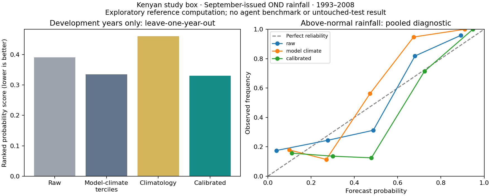

Development feasibility passed. No agent benchmark runs.
Live retrieval, seasonal aggregation, independent numerical verification, and fitted-model save/reload succeeded. The scientific contract and thresholds remain a draft for joint review.
Question: Can calibration improve September-issued October–December rainfall forecasts in a central/southern Kenyan study box, relative to the original forecast and climatological baselines?
1993–2008 development data only: ECMWF seasonal system 51, 25 members, 12 native one-degree cells covering 36–39°E and 3°S–1°N. CHIRPS v3 final monthly observations were averaged onto each forecast cell with cosine-latitude weights. Forecast rates were multiplied by the days in each valid month before summation. The box is not a national Kenya aggregate.
Each development year was left out in turn. Training-only observations defined the tercile thresholds; ensemble regression was fitted on the other 15 years. An independent least-squares implementation reproduced probabilities within 1.9 × 10−15 and matched deterministic rainfall predictions. All native forecast values and unit conversion were checked against the provider response; nine CHIRPS pixels were checked directly against a native COG. A 4,757-byte saved fitted model reproduced its pre-save predictions exactly on a development replay.
| Prediction | Mean ranked probability score ↓ | Above-normal reliability gap ↓ |
|---|---|---|
| raw | 0.3908 | 11.0 pp |
| model climate | 0.3350 | 12.9 pp |
| climatology | 0.4601 | 1.6 pp |
| calibrated | 0.3301 | 12.3 pp |
Calibration reduced probability-score error 15.5% versus raw forecasts, but only 1.5% versus model-climatology terciles. The latter baseline expresses ensemble members relative to their own training-period model distribution, removing much of the simple distribution mismatch. Both baselines must remain visible.
Seasonal rainfall RMSE decreased from 150.5 to 113.0 mm (24.9%). Probability calibration did not improve against raw forecasts on the pooled diagnostic: its gap rose from 11.0 to 12.4 percentage points. Calibration and accuracy therefore stay separate on the scorecard.
These are not untouched-test results. Exploratory paired-year resampling intervals for RPS improvement span −2.4% to +35.0% versus raw, and −8.8% to +14.6% versus model climatology. They include no gain; folds share training data. There are only 16 independent year units, and some probability bins contain only two to four years. No calibration pass/fail or established superiority claim is justified.

Main: obtain the specified data, fit a seasonal calibration on 1993–2008, and submit a frozen workflow for a private 2009–2016 forecast batch. An independent evaluator supplies verification results after predictions are frozen; the agent then completes the scientific report. The proposed evaluation data have not been retrieved or inspected.
Follow-up: in a fresh conversation, use the arm’s saved code, notes, fitted models and artifacts to process a new 2017–2024 batch with the same training period, season, region and outputs. All arms retain their own work. Record source edits and repairs, tokens, dollars, elapsed time, transfer time and cache use. New batch availability and model-system consistency still need metadata validation before locking.
Three arms × two tasks = six attempts per mode. Controlled access first; an open-web replication is a separate second round, for twelve attempts if both run. No extra fresh follow-up controls. This pilot can demonstrate working reuse, but cannot isolate its causal savings from changes in task difficulty.
Separate completion, accuracy, calibration and cost/reuse scores. Six completion stages—acquisition, alignment, fitting, prediction, verification, reproduction—each receive 0 (absent/incorrect), 1 (partially correct), or 2 (complete and correct). All six must score 2 for full completion. A valid negative scientific result can complete the task.
Incorrect units or periods, leaked verification observations, invalid probability distributions, or missing required forecast cases invalidate a full-task scientific comparison. Partial work remains visible. The grader computes scores from submitted fields independently of the agent’s claimed scores.
Not yet agreed: the final method freedom, threshold baseline, whether a 5% RPS reduction is the useful-gain bar, calibration sample-size requirements, exact evaluation years, and the common model/budgets. A proposed 10-point reliability tolerance is not a validated threshold for this small sample. Grid cells must not be counted as independent years.
All arms get the same generic scientific Python environment, model, resource limits and data permissions. Rhiza additionally receives pinned skill scripts and guides; ACCORD receives pinned AfricaS2S/acmadDL libraries and guides. From-scratch receives neither. Every arm can write Python and keep its work. The pinned Rhiza catalog lacks a dedicated seasonal C3S fetcher; acquisition requires Python glue there.
Controlled mode needs exact request/documentation rules, no direct network bypass, separate workspaces, and private evaluation. Host home directories, Docker socket, grader answers and other-arm files must not be exposed. Open-web development requires crossover/leakage audit and frozen-code private evaluation. These controls are specified, not implemented or certified by this preflight. None of the reference code, development result figures or fitted reference artifacts should be mounted into agent workspaces.
Machine-readable draft · Detailed scores and bin counts · Raw-source audit and request manifest · Environment pins
The existing prepared environment was used; this new repository does not yet have a standalone environment lock or an agent runner. Cached development files are local and excluded from Git. The old weather-skills-bench worktree was preserved.
../weather-skills-bench/.venv-accord/bin/python fetch_development.py forecast ../weather-skills-bench/.venv-accord/bin/python fetch_development.py observations ../weather-skills-bench/.venv-accord/bin/python score_development.py2026-10-01 · Feasibility evidence; experiment specification awaits joint agreement.